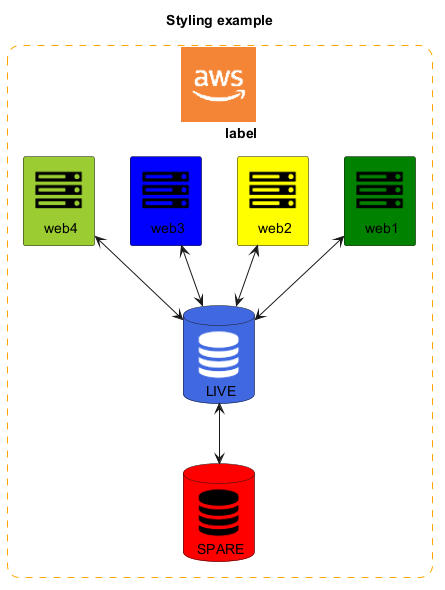

@startuml
' PlantUML stdlib now includes Icon-Font Sprites! See https://github.com/tupadr3/plantuml-icon-font-sprites
skinparam packageTitleAlignment left
!include <tupadr3/common>
!include <tupadr3/font-awesome/server>
!include <tupadr3/font-awesome/database>
!include <aws/common>
!include <aws/general/awscloud/awscloud>
title Styling example
skinparam rectangle {
roundCorner<<AWSCLOUD>> 25
borderStyle<<AWSCLOUD>> dashed
borderColor<<AWSCLOUD>> orange
}
AWSCLOUD(test,label,rectangle){
FA_SERVER(web1,web1) #Green
FA_SERVER(web2,web2) #Yellow
FA_SERVER(web3,web3) #Blue
FA_SERVER(web4,web4) #YellowGreen
FA_DATABASE(db1,LIVE,database,white) #RoyalBlue
FA_DATABASE(db2,SPARE,database) #Red
db1 <--> db2
web1 <--> db1
web2 <--> db1
web3 <--> db1
web4 <--> db1
}
@enduml